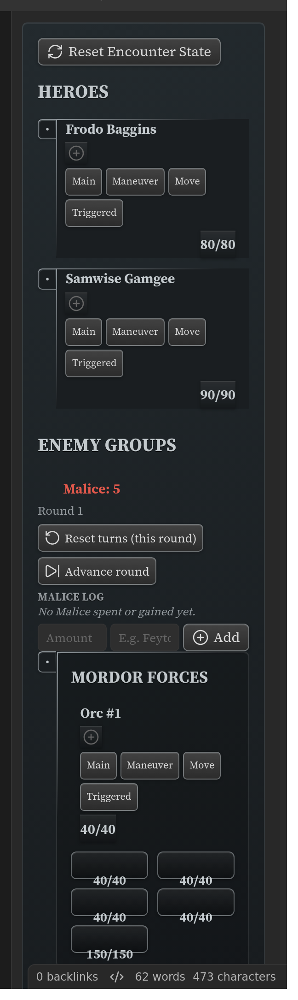
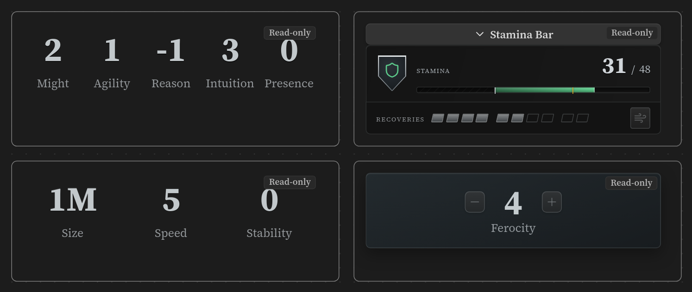

Advanced Usage¶
For people who are comfortable in the plugin and want to know where the edges are. Nothing here is needed to use it — Getting started is the whole basic loop.
Reference vs. snapshot, exactly¶
Two commands put compendium content in a note, and they make opposite promises.
Insert compendium reference writes a code:
```ds-scc
mcdm.heroes.v1/kit/panther
```
The block re-resolves every time the note renders. Nothing but the code is in your note, so the card always reflects the currently synced compendium. If the code isn't in your vault, the card says so and offers a link to steelcompendium.io.
ds-scc renders whatever the code points at — a kit, a condition, a rule, a creature —
and its body must be a single code and nothing else. Two things follow:
- The code is stable; the card is not specified. Layouts change as the plugin develops. Don't build anything that depends on a particular card's shape.
- Statblocks, features and featureblocks accept the same reference in their own blocks
(
ds-statblock,ds-feature,ds-featureblock) — as a code, a[[wikilink]], or an@-prefixed vault path. Use those when you want to be explicit about the kind of thing you're embedding; useds-sccwhen you don't care.
Insert compendium block (snapshot) writes the entry's full text instead — an editable copy that deliberately stops following the compendium. That divergence is the feature; see Customize a monster. Snapshots exist for statblocks, features and featureblocks only.
A third form is worth knowing: hold Shift when picking a search result and you get an
inline link — [Panther](scc.v1:mcdm.heroes.v1/kit/panther) — for use in a sentence rather
than a block. Those resolve against your synced compendium first, and can fall back to
steelcompendium.io (Settings → Links).
Per-block appearance overrides¶
Appearance is global by design (Settings), but a single block can pin its
own presentation with a reserved prefs: key. It is stripped before the block is parsed,
so it never collides with the element's own fields, and it survives interaction with a
tracker.
prefs:
sbDensity: compact
sbFeatureStyle: flat
| Key | Values |
|---|---|
sbFeatureStyle |
card, flat |
sbDensity |
comfortable, compact |
sbColumns |
single, wide |
sbStats |
grid, gridc, ledger |
kwUsage |
crest, text, grid, ledger |
distTarget |
grid, text, ledger |
fbFeatureStyle |
card, flat |
fbStats |
grid, ledger |
sbSticky |
on, off |
sbStickyMeta |
on, off |
reduceMotion |
true, false |
printPreview |
on, off |
portraits |
on, off |
What can't be overridden per block, and why. The three settings that change a card's
structure rather than its styling — Characteristics (sbCharLine), Boxed first
letter (sbCharBox) and Villain actions (sbVillain) — are global only: the view
reads them while it is building the card, so a per-block override would pair one block's
structure with another's styling and render something corrupt. The typography settings
(fonts and the size scales) are global for a different reason: they are applied as page-level
styling, not per-card. Naming any of them in a block's prefs: logs a warning to Obsidian's
developer console and the block renders normally.
The sidebar¶
Any block can be pinned to a persistent panel in Obsidian's right sidebar: put your cursor inside it and run Send block to sidebar. It stays interactive there while you navigate between notes, and edits made in either place stay in sync.

Worth knowing:
- The panel is bound to that specific block, in that specific note. The plugin adds a small
_dse_anchormarker to the block so it can find it again — that's what that line is. - One sidebar can hold several panels at once; they stack.
- Trackers are what this is for — initiative, montage, project, party, a hero sheet. Pin the one you're using this session.
- Open or focus the panel any time with the crossed-swords ribbon icon, or Open Draw Steel sidebar.
Narrow panes are a real layout: elements reflow at sidebar width (the stamina cluster collapses to a two-line rail, for instance) rather than being squeezed. A statblock's sticky mini-header reflows the same way: at sidebar width it drops the stat pills and the secondary-stats line and keeps just the creature's name and role, which is the question a pinned header is there to answer.
Canvas¶
Elements render inside Obsidian Canvas text nodes, which makes a canvas a good way to lay out a character sheet or a session dashboard.

Canvas elements are read-only, and they say so. A canvas text node gives the plugin no file to write back to, so anything interactive — spending a Recovery, marking a turn, stepping a resource — is deliberately disabled rather than silently discarded, and each card carries a small "Read-only" badge. Use canvas for a layout you look at; keep the blocks you actually click in ordinary notes (or pin them to the sidebar).
A canvas node is a fixed-size card you drag, not a scroll surface, so the statblock sticky mini-header is inert there whatever the setting says.
Print and PDF export¶
Everything renders in a print layout when you print or export to PDF, and the layout you picked in Settings carries over.
- Print preview (Settings → Appearance) shows that layout on screen so you can check a handout without printing it. What it shows is what Obsidian's Export to PDF produces: both go through the same print layout, so the preview is a real proof, not an approximation. (Before 7.0.0 the two could disagree — a PDF kept the on-screen card plate, gradient and drop shadow that the preview correctly stripped.)
- Text size and Card size always print at 100%, whatever you set on screen — a scale that helps you read a screen ruins a page.
- Villain actions are always open in print, even with the collapsible band selected.
- The Winded/Dying states fall back to a badge beside the Recovery markers, since the on-screen treatment leans on colour and motion.
Rolling¶
Rolling is off by default — turn it on in Settings → Rolling. Then:
- Clicking a power-roll tier row on an ability card rolls it (2d10 + modifiers, tiers, edges and banes, crits on a natural 19–20 for main-action power rolls).
- The standalone
ds-rollblock always rolls, whatever the setting says — writing the block is the opt-in. - If you use the community Dice Roller plugin, the Roller setting hands it the raw dice; Draw Steel's tier/edge/bane maths always stays native, and the plugin falls back to its own roller automatically if that plugin is missing.
- Results are never written to your note. They live in memory for the session and are gone when Obsidian restarts. Nothing you roll can dirty a file.
Writing YAML by hand¶
The three stable authoring surfaces, each fully documented:
- Statblock —
ds-statblock/ds-sb - Feature —
ds-feature/ds-ft/ds-feat, for abilities, traits, tests and custom power rolls - Featureblock —
ds-featureblock/ds-fb
Plus the trackers, which are documented field by field: initiative, negotiation, Director's trackers, hero sheets.
Two authoring aids worth turning on while you write: autocomplete inside a block (start typing a field name and Obsidian suggests the ones that element accepts — always on), and the form editor (Settings → Authoring), which gives every rendered block a pencil (in its element menu) that opens a validating form with a live preview. Both are described in Writing and editing blocks.
Every element also accepts several aliases (ds-sb for ds-statblock, ds-it for
ds-initiative, and so on) — the full list is in the catalog.
Things that are deliberately not documented¶
The plugin registers a few blocks that exist as internal machinery rather than as an
authoring surface. If you find one in the code or in a compendium file, don't build on it:
its inline format is internal and can change without notice. ds-scc is the supported way
to render any compendium entry.